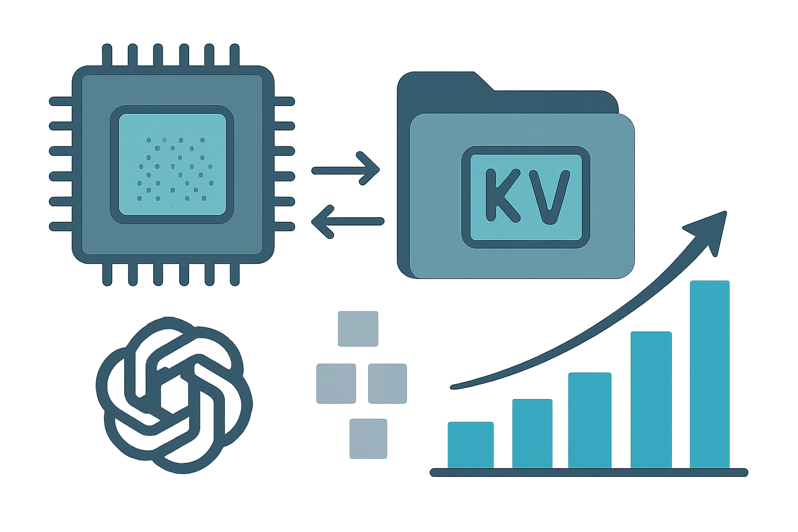

08 arXiv 게시일 2026.08.07
OasisKV, GPU 메모리 덜 쓰고 추론 2배 높였다

긴 문맥을 다루는 LLM 서비스는 연산보다 메모리에서 더 자주 막힌다. 특히 KV 캐시가 GPU 메모리를 크게 차지한다. OasisKV 논문은 이 병목을 줄이기 위해 필요한 KV만 GPU 메모리에 남기는 방법을 제안했다. 구현은 vLLM 기반이다.
핵심 브리핑
논문은 LLM 추론 서빙의 병목이 계산보다 메모리에 있다고 짚었다. 긴 문맥과 장문 추론이 늘면서 decode 단계의 KV 캐시가 메모리 용량과 메모리 트래픽을 지배한다는 설명이다. 특히 HBM 용량이 배치 크기와 처리량을 제한하는 희소 자원이 됐다고 봤다.
OasisKV는 전체 KV 캐시를 HBM에 다 두지 않는다. decode 시점의 attention이 자연스럽게 희소하다는 점을 이용한다. 다음 단계에 중요할 토큰의 KV만 HBM에 남기고, 나머지는 더 큰 상위 메모리 계층에 둔다. 그런 뒤 speculative decoding이 만든 lookahead tokens를 써서 앞으로 중요할 KV blocks를 예측하고 미리 가져온다.
연구진은 이 방식을 vLLM 위에 구현했다. 2,048-token KV budget에서 full attention 대비 정확도 차이를 0.7 points 이내로 유지했다고 밝혔다. reasoning workload에서는 dense vLLM보다 1.69× 처리량을 냈고, 정확도 손실은 0.1 points였다. multi-GPU long-context serving에서는 최대 2.1×까지 올랐다.
- 정확도 차이: within 0.7 points of full attention
- KV budget: 2,048-token
- 처리량 향상: 1.69× over dense vLLM
- reasoning workload 정확도 손실: 0.1 points
- multi-GPU long-context serving: up to 2.1×
- prefill-decode disaggregation 처리량: about 2× dense throughput
- 요청당 KV 감소: 6.5–9.7× less KV
- decode-node host memory 감소: 2.2–2.6× less
방법과 결과
핵심 방법은 세 단계다. 먼저 decode 단계에서 실제로 중요한 KV만 HBM에 둔다. 그다음 speculative decoding의 lookahead tokens로 미래에 중요할 토큰을 예측한다. 마지막으로 상위 메모리 계층의 KV blocks를 다음 decode step 전에 미리 HBM으로 가져온다.
결과는 처리량과 메모리 절감에 초점을 맞췄다. 2,048-token KV budget에서 full attention 대비 정확도 손실을 0.7 points 이내로 묶었다. reasoning workload에서는 dense vLLM 대비 1.69× throughput을 기록했으며, 정확도 손실은 0.1 points였다. multi-GPU long-context serving에서는 최대 2.1×를 보고했다.
prefill-decode disaggregation 조건에서도 수치를 제시했다. dense throughput의 about 2×를 달성했으며, 각 요청은 6.5–9.7× less KV로 수용했다. decode-node host memory도 full KV transfer 대비 2.2–2.6× 덜 썼다.
한계도 드러난다. 이 발췌에는 모델별 실험 범위, 워크로드 종류의 세부 구성, 지연 시간의 세부 분해는 없다. 저자들이 인정한 추가 제약은 본문에 충분히 담기지 않았다.
| 지표 | OasisKV 결과 | 비교 기준 |
|---|---|---|
| 정확도 차이 | within 0.7 points | full attention, 2,048-token KV budget |
| 처리량 | 1.69× | dense vLLM on reasoning workload |
| 정확도 손실 | 0.1 points | reasoning workload |
| 처리량 | up to 2.1× | multi-GPU long-context serving |
| 처리량 | about 2× | dense throughput under prefill-decode disaggregation |
| 요청당 KV | 6.5–9.7× less KV | full KV transfer |
| 호스트 메모리 | 2.2–2.6× less | full KV transfer |
업계의 움직임
아직 공개된 반응은 확인되지 않았다.
시사점과 체크포인트
긴 계약서, 보고서, 상담 이력처럼 문맥이 긴 데이터를 다루는 금융IT 서비스는 KV 캐시 비용 영향을 크게 받는다. 이 연구는 같은 GPU 자원에서 동시 요청 수를 늘리거나, 더 긴 문서를 다루는 설계에 도움이 될 수 있다.
검토할 팀은 AI 인프라, 플랫폼 엔지니어링, 비용 관리 조직이다. vLLM 기반 추론 스택을 쓰고 있다면 실험 연결이 비교적 수월할 수 있다. 다만 연구 수치가 우리 워크로드에 그대로 나오리라 단정하면 안 된다.
확인할 질문은 아래와 같다.
- 우리 서비스의 병목이 실제로 GPU 연산보다 HBM과 KV 캐시에 있는가
- 긴 문맥 질의에서 정확도 0.1~0.7 points 손실을 감수할 수 있는가
- host memory와 remote memory를 활용할 인프라 구성이 준비돼 있는가
- speculative decoding을 이미 쓰는지, 함께 붙일 수 있는지
이 논문은 시스템 설계 제안이다. 상용 환경에 넣기 전에는 지연 시간 분포, 장애 복구, 멀티테넌시 영향까지 함께 검증해야 한다.
주요 용어
원문 정보
제목: OasisKV: Scaling In-Decode KV Cache Beyond HBM with Lookahead Sparse Prefetching
게시일: 2026.08.07
출처 URL: https://arxiv.org/abs/2608.08097